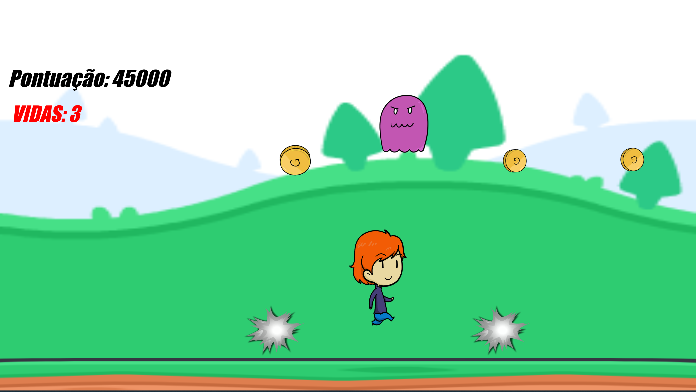

Sobre o jogo
Coins é um jogo de reflexo e agilidade onde o objetivo é coletar o máximo de moedas possível enquanto desvia de monstros pelo caminho.
À medida que o tempo passa, a dificuldade aumenta, exigindo mais agilidade, atenção e precisão do jogador.
Cada partida é uma oportunidade de superar seus próprios limites e alcançar pontuações cada vez maiores.
Sobre mim
Meu nome é Ismael Kuasnecha Vidal, criador deste site e do jogo Coins.
Sou um desenvolvedor iniciante apaixonado por tecnologia e jogos.
Criei Coins como parte do meu aprendizado, buscando evoluir em programação e criar algo divertido.
Imagens em destaque


